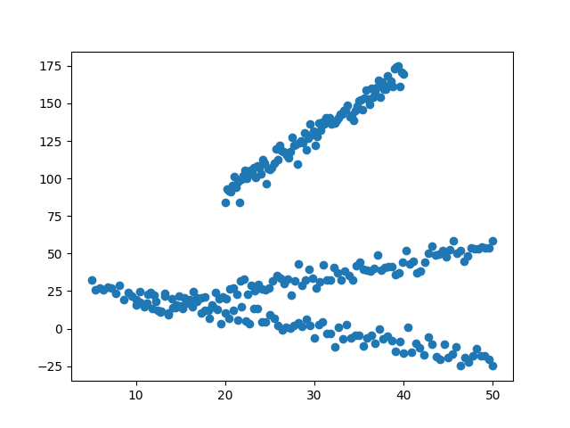
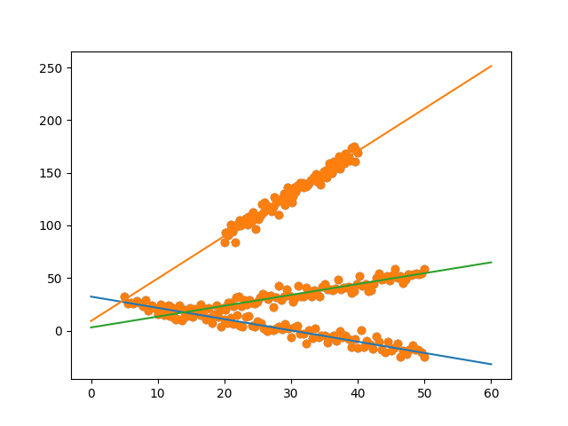
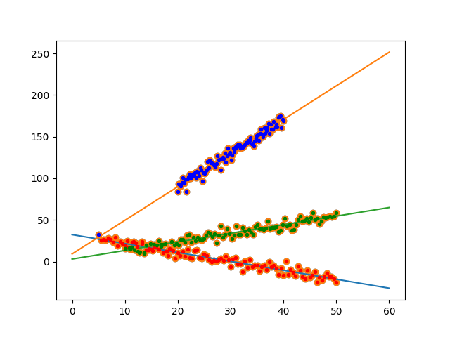

Birden Fazla Düz Çizgi Regresyonu, Çizgi Karışım Modeli (Line Mixture Model -LMM-)
Aynen veriye bir veya birden fazla boyutlu Gaussian karışımlarını uydurabildiğimiz gibi birden fazla çizgilerin karışımını da veriye uydurabiliriz. Alttaki veriye bakalım,
#lines = [[1,4,10,50],[-1,30,5,50],[4,10,20,40],[0.4,0,80,100]]
lines = [[1,4,10,50],[-1,30,5,50],[4,10,20,40]]
xs = []; ys = []
for a,b,x1,x2 in lines:
x = np.linspace(x1,x2,100)
y = a*x + b
y += np.random.randn(100)*4
xs.append(x); ys.append(y)
xs = np.array(xs).T.flatten()
ys = np.array(ys).T.flatten()
plt.scatter(xs,ys)
plt.hold(True)
plt.savefig('stat_lmm_01.png')

Model olarak düz çizgi kullanmaya karar verdikten sonra önemli soru şu: çizgileri nasıl modelleriz? Bize bir olasılıksal temsil yöntemi lazım ki böylece bir maksimum olurluk denklemi türetebilelim ve bu denklemi Beklenti-Maksimizasyon (Expectation-Maximization -EM-) ile çözelim.
Bir fikir: her nokta üzerinde sanki bir tek boyutlu Gaussian varmış gibi düşünebiliriz, ve o noktada hatayı (negatif olurluk) ölçeriz, ki hata o noktada olduğu düşünülen bir çizginin gerçek veri noktasına olan $y$ eksenindeki uzaklığı olabilir. Böylece lineer regresyon tekniğini aslında çok çizgili olacak şekilde genişletmiş oluyoruz. Bu karışım modelin formu şöyle,
$$ L = \prod_{i=1}^{N} \sum_{k=1}^{K} \pi_k N(y_i; f_k(x_i),\sigma_k^2) $$
$$ \log L = \sum_{i=1}^{N} \log \sum_{k=1}^{K} \pi_k \frac{1}{\sqrt{2\pi\sigma_k^2}} \exp (-(y_i-f_k(x_i))^2 / 2\sigma_k^2) $$
ki çizgi tanıdık gelecek formül,
$$ f_k(x_i) = a_kx_i + b_k $$
$Q$ fonksiyonu,
$$ Q \propto \sum_{i=1}^{N} \sum_{k=1}^{K} \bigg[ \log \pi_k - \frac{1}{2} \log (\sigma_k^2) - \frac{(y_i - (a_kx_i + b_k))^2}{2 \sigma_k^2} \bigg]\eta_{ik} $$
$\eta_{ik}$, $i$ noktasının $k$ çizgisine ait olma olasılığıdır.
Türevleri alırsak,
$$ \frac{\partial Q}{\partial a_k} \propto \sum_{i=1}^{N} (y_i - a_kx_i - b_k)x_i\eta_{ik} = 0 $$
$$ \frac{\partial Q}{\partial b_k} \propto \sum_{i=1}^{N} (y_i - a_kx_i - b_k)\eta_{ik} = 0 $$
$$ \frac{\partial \bigg( Q + \lambda \big( \sum_{k=1}^{K}\pi_k -1 \big) \bigg) }{\partial \pi_k} \propto \sum_{i=1}^{N} \frac{\eta_{ik}}{\pi_k} + \lambda = 0 \qquad \sum_{k=1}^{K} \pi_k = 1 $$
Tekrar düzenleyip parametreler için çözüm yaparsak,
$$ \hat{a}k = \frac{\sum{i=1}^{N} x_i (y_i-b_k) \eta_{ik}} {\sum_{i=1}^{N}x_i^2 \eta_{ik}} $$
$$ \hat{b}k = \frac{\sum{i=1}^{N} (y_i - a_kx_i) \eta_{ik}} {\sum_{i=1}^{N} \eta_{ik}} $$
$$ \hat{\sigma}^2_k = \frac{\sum_{i=1}^{N} (y_i - (a_kx_i+b_k))^2 \eta_{ik}} {\sum_{i=1}^{N}\eta_{ik}} $$
$$ \hat{\pi}k = \frac{1}{N} \sum{i=1}^{N} \eta_{ik} $$
def em_line(x,y,n_components):
eta = np.random.rand(len(x),n_components)
a = np.random.rand(n_components) * 10
b = np.random.rand(n_components) * 10
sigma2 = np.random.rand(n_components) * 10
pi = np.random.rand(n_components)
for i in range(1000):
for k in range(n_components):
# hats
ahat = np.sum(x*(y-b[k])*eta[:,k]) / np.sum(x**2*eta[:,k])
etasum = np.sum(eta[:,k])
bhat = np.sum((y-a[k]*x)*eta[:,k]) / etasum
sigma2hat = np.sum( (y - (a[k]*x+b[k]))**2 * eta[:,k] ) / etasum
pihat = (1./len(x)) * etasum
#print ahat, bhat, sigma2hat, pihat
a[k] = ahat
b[k] = bhat
sigma2[k] = sigma2hat
pi[k] = pihat
for k in range(n_components):
tmp1 = 1. / np.sqrt(2*np.pi*sigma2[k])
tmp2 = (y-(a[k]*x+b[k]))**2
eta[:,k] = tmp1 * np.exp(-( tmp2 / (2*sigma2[k]) ) )
eta = eta / eta.sum(axis=1)[:,None]
return a,b,eta
a,b,eta = em_line(xs,ys,n_components=3)
print a
print b
plt.scatter(xs,ys)
plt.hold(True)
for k in range(3):
tmp = np.linspace(0,60,100)
plt.plot(tmp,tmp*a[k]+b[k])
plt.hold(True)
plt.savefig('stat_lmm_02.png')
[-1.02632885 3.9704963 0.96107527]
[ 30.43624091 11.21649921 5.18239643]

labels = np.argmax(eta, axis=1)
colors = ['r','b','g','c']
for k in range(3):
plt.plot(xs[labels==k],ys[labels==k],'.'+colors[k])
plt.hold(True)
plt.savefig('stat_lmm_03.png')

Çözüm hiç fena değil.
Yanlız bazı potansiyel eksiklerden bahsedelim; çizgiler tanım itibariyle sonsuzdan gelip sonsuza giden şeylerdir, yani uzunlukları temsil ettiği veri kümesini aşabilir, bu sebeple eğer onlara yakın başka kopuk ama yakınca başka bir veri kümesi var ise LMM o kümeyi de modellemeye uğraşacağı için temsiliyet bozulabilir. Eğer yanyana kopuk pek çok veri kümesi var ise belki Gaussian Karışım Modeli (GMM) daha iyi bir çözüm olabilir. GMM'lerin kovaryansları bir kontur bağlamda ince bir elips haline gelerek düz "çizgimsi" ama kopuk bir bölgeyi rahatça temsil edebilir.
Kaynaklar
[1] Traa, Expectation Maximization - Math and Pictures, http://cal.cs.illinois.edu/~johannes/research/EM%20derivations.pdf